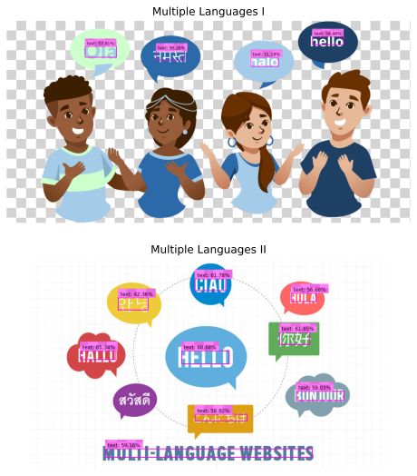
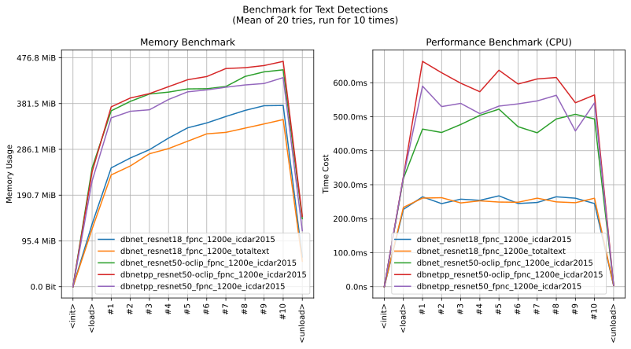

imgutils.detect.text
- Overview:
Detect text in images.
Models are hosted on deepghs/text_detection.
This is an overall benchmark of all the text detect models:
Warning
This module has been deprecated and will be removed in the future.
It is recommended to migrate to the
imgutils.ocr.detect_text_with_ocr()function as soon as possible. This function uses a higher-quality text detection model provided by PaddleOCR, resulting in improved performance and higher efficiency.
detect_text
- imgutils.detect.text.detect_text(image: str | PathLike | bytes | bytearray | BinaryIO | Image, model: str = 'dbnetpp_resnet50_fpnc_1200e_icdar2015', threshold: float = 0.05, max_area_size: int | None = 640)[source]
Detect text regions in the given image using the specified model and threshold.
- Parameters:
image (ImageTyping) – Input image.
model (str) – Model name for DBNET or DBNET++.
threshold (float) – Confidence threshold for text detection.
max_area_size (Optional[int]) – Max area size when doing inference. Default is
640, which means if the image’s area is over 640x640, it will be resized. When assigned toNone, it means do not resize in any case.
- Returns:
List of detected text bounding boxes, labels, and scores.
- Return type:
List[Tuple[Tuple[int, int, int, int], str, float]]
Warning
This function is deprecated, and it will be removed from imgutils in the future. Please migrate to
imgutils.ocr.detect_text_with_ocr()as soon as possible.Deprecated since version 0.2.10: This will be removed in 0.4. Use the new function
imgutils.ocr.detect_text_with_ocr()instead